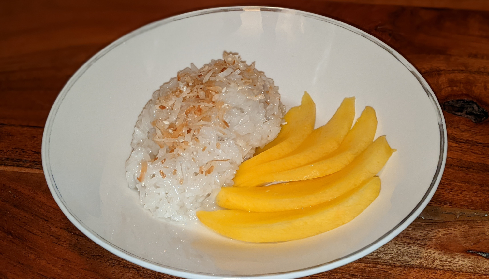

Thai Mango Sticky Rice

Author: Derek Nichols |
Cooked: March 5, 2022
Yields: 6 Servings | Prep Time: 10 Minutes | Cook Time: 40 Minutes
Ingredients
- 2 c. glutinous (sweet) rice
- 1 1/3 c. well-stirred canned unsweetened coconut milk
- 1/3 c. + 3 Tbs sugar
- 1/4 tsp salt
- Vegetable oil
- Sweetened shredded coconut
- Sesame seeds
- 2 large mangos
Directions
- In a bowl, rinse rice with cold water until water runs clear. Soak rice in cold water and cover overnight.
- Drain rice well in a sieve. Set sieve over a large pot of boiling water (water level such that the rice is not touching the water) and steam rice, covered with a kitchen towel and lid, for 30-40 minutes, or until tender.
- While rice is cooking, in a small saucepan, bring 1 c. coconut milk, 1/3 c. sugar, and 1/4 tsp salt to a boil. Stir until sugar is dissolved, and remove from heat.
- Transfer cooked rice to a bowl and stir in the coconut milk mixture. Cover and let stand 30 minutes.
- While rice is standing, in a small saucepan, bring 1/3 c. coconut milk and 3 Tbs sugar to a boil, stirring occasionally. Transfer to a small bowl to cool.
- Add a drizzle of vegetable oil to a pan over medium heat. Add coconut flakes (~1/4 c.) and cook until lightly toasted. Add sesame seeds (~1 tsp) and cook until coconut is golden brown. Remove from pan.
- Peel, pit, and cut mangos into thin slices.
- To serve, mold 1/4-1/3 c. rice onto a plate. Add few spoonfuls of sauce and top with coconut-sesame seed mixture. Add mangos on side.
Additional Notes
- I had some trouble finding glutinous rice and had to buy it online. There is no substitute. You must use glutinous rice.
- As the sauce cools, it will develop a layer on top from the coconut milk separating. Simply microwave the sauce for 30-45 seconds and whisk until the sauce is once again uniform.